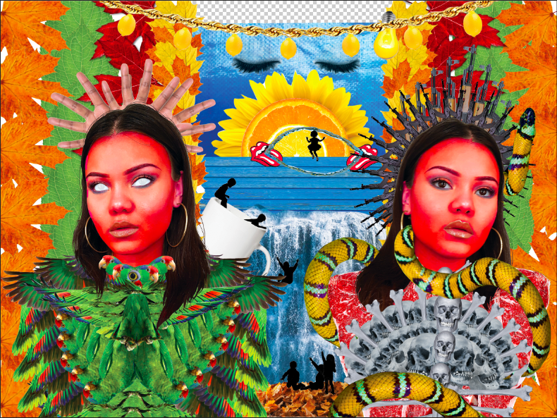

Hej det här är jag(och lite till)!
Jag har en bakgrund i konst och design. Under 2017 och 2018 studerade jag på Gerlesborgsskolan, som är en konstskola i Stockholm. Här!
Jag kommer från början från Växjö men nu bor jag i Stockholm och jobbar som restaurangbiträde på en lunchrestaurang som heter
Pocket by Pontus